Memory across generations in plants, worms, mice and humans, and how to judge the claims
What is epigenetics? defined an epigenetic state as one that is heritable without a change in DNA sequence, and showed how marks survive cell division. This lecture asks the harder question: can a state, or an experience, be passed on to children and grandchildren?
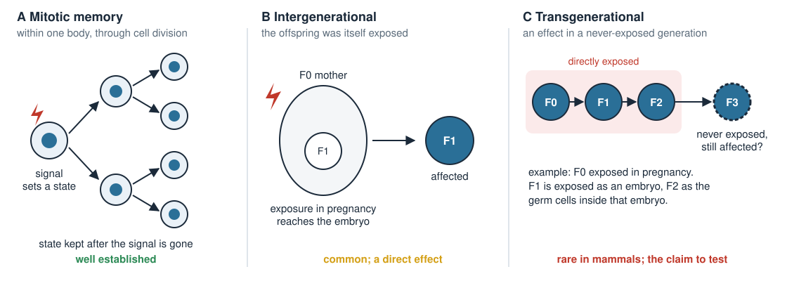
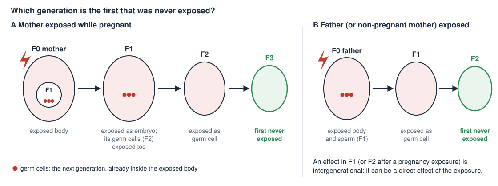
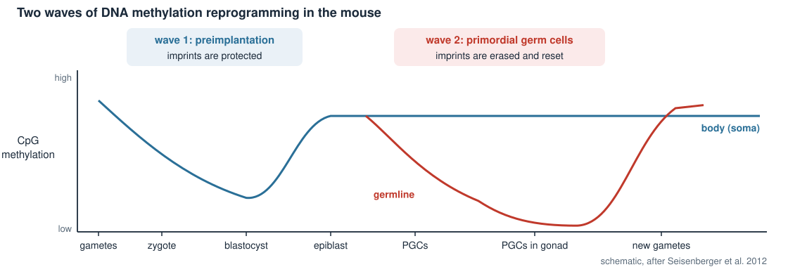
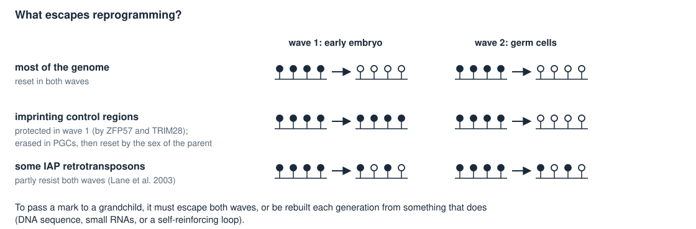
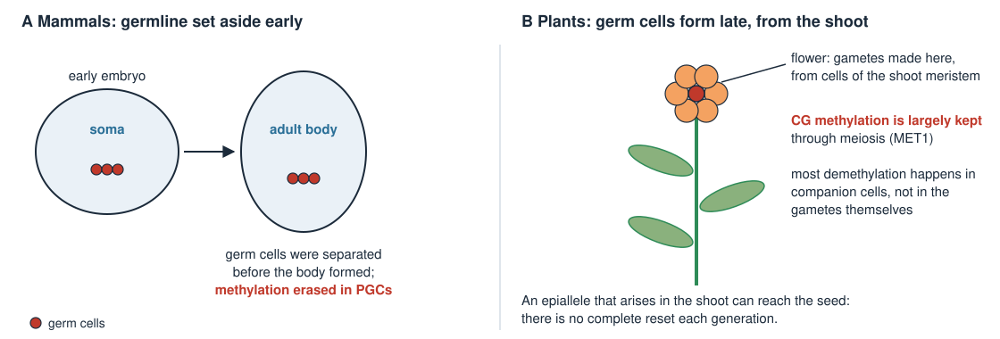
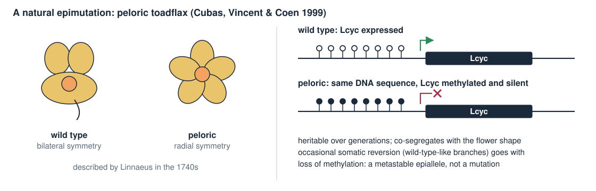
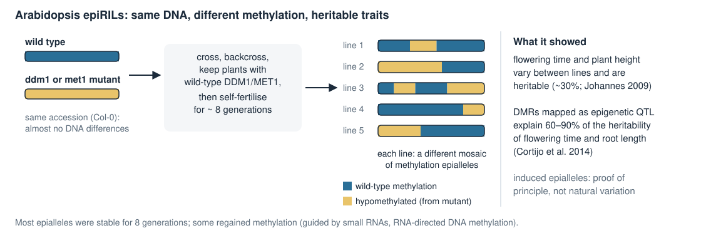
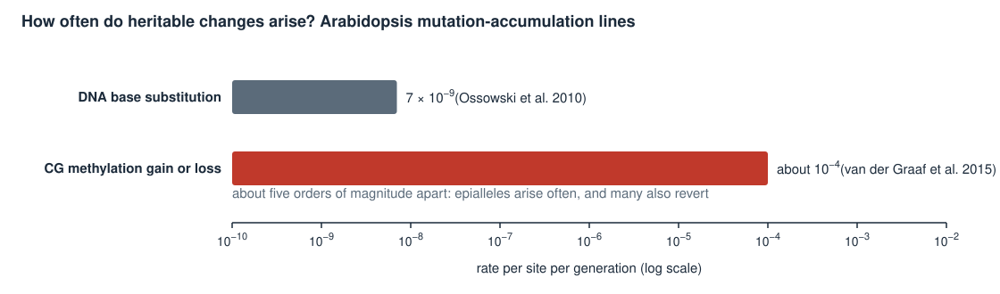
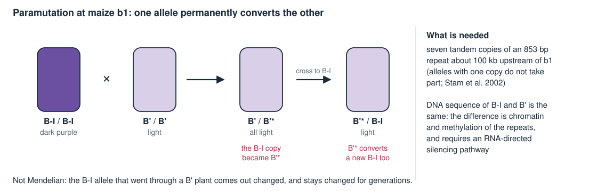
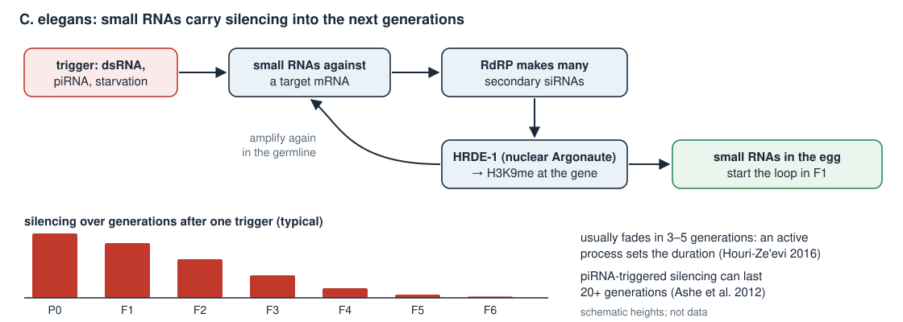
| locus | what it is | what is inherited |
|---|---|---|
| Avy (agouti viable yellow) | an IAP upstream of agouti; its methylation varies between genetically identical mice and sets coat colour | offspring resemble the mother’s state: incomplete erasure through the female germline (Morgan et al. 1999) |
| AxinFu (axin fused) | an IAP in Axin; methylation predicts a kinked tail | inherited through both mothers and fathers (Rakyan et al. 2003) |
| genome-wide screen | variably methylated IAPs in C57BL/6J (Kazachenka et al. 2018) | most are reset after fertilisation and re-established as variable: the variability is inherited, not the parent’s state |
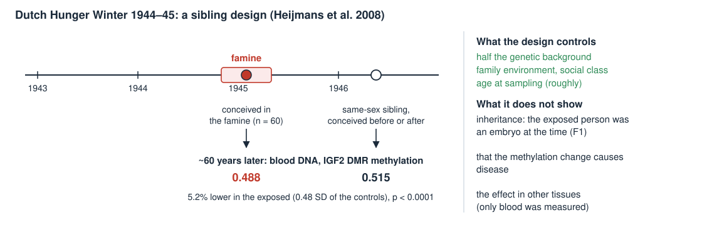
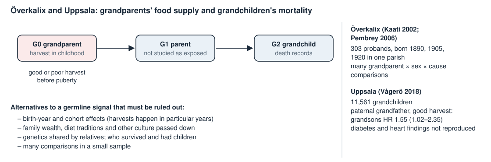
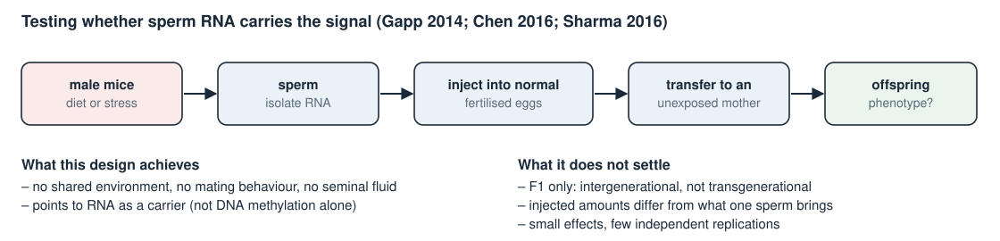
| claim | issue raised |
|---|---|
| Endocrine disruptor (vinclozolin) given to pregnant rats lowers male fertility to F4 (Anway et al. 2005) | high doses by injection; reports from other groups, with other exposure routes and strains, have been inconsistent |
| Odour fear conditioning of F0 mice changes F1 and F2 sensitivity to that odour (Dias & Ressler 2014) | the uniformly significant results across many small experiments are improbable (Francis 2014 estimated p = 0.004); mechanism unclear |
| Human famine, trauma or smoking affects grandchildren | confounded by genetics, culture and in-utero exposure; no measured carrier |
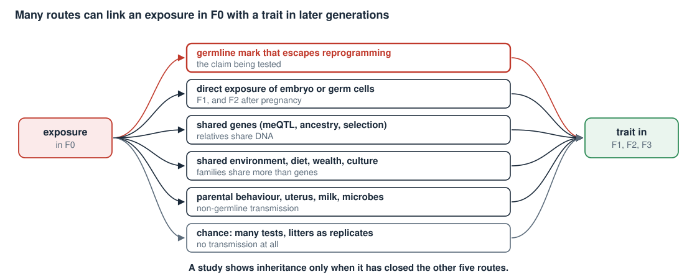
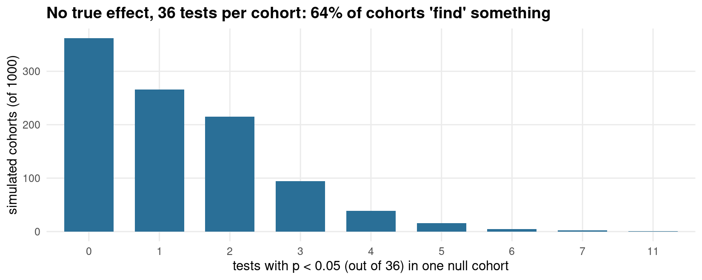
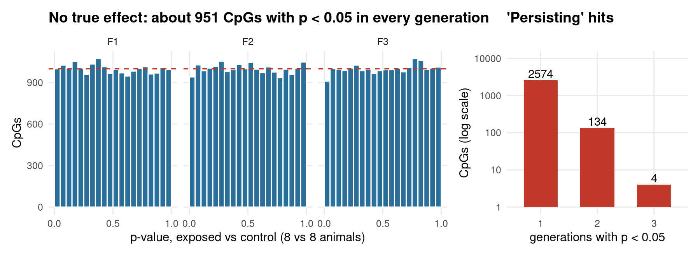
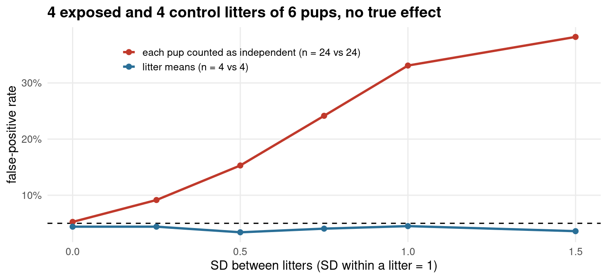
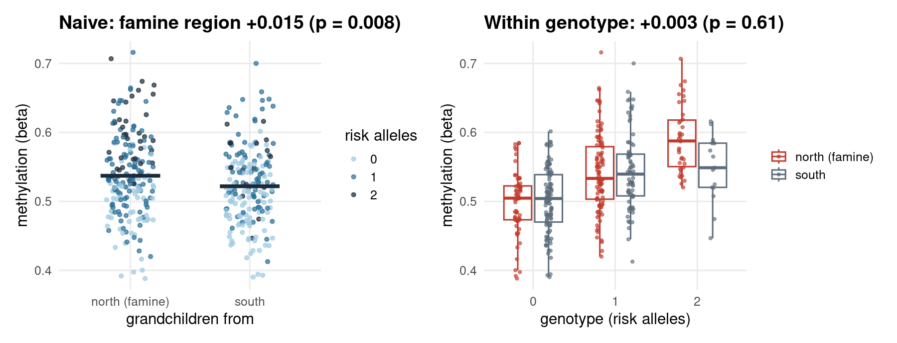
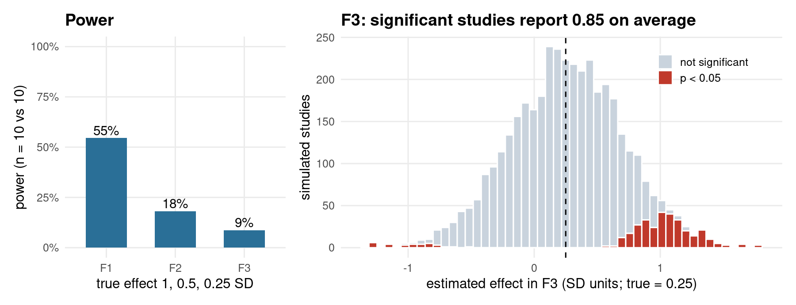
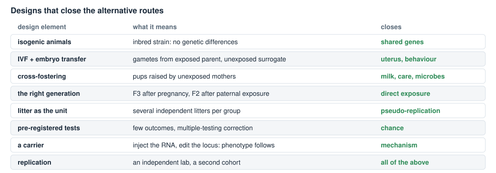
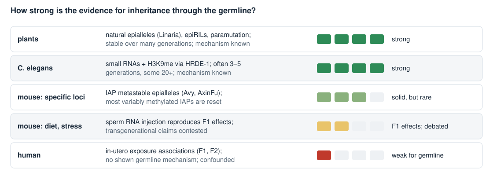
| question | why |
|---|---|
| Which generation shows the effect? Was it exposed? | F0–F3 rule: intergenerational vs transgenerational |
| What is the unit of replication? | litters, families, F0 animals |
| How many outcomes, CpGs, subgroups were tested? | forking paths and multiple testing |
| Are genetics and shared environment controlled? | isogenic strains, siblings, genotype adjustment |
| Are maternal and behavioural routes closed? | IVF, embryo transfer, cross-fostering |
| Is there a carrier, and is it sufficient and necessary? | mechanism |
| Has it been replicated independently? | small studies exaggerate |
| idea | key fact |
|---|---|
| three meanings | mitotic memory; intergenerational (offspring exposed); transgenerational (never exposed) |
| F0–F3 rule | pregnancy exposure: F3 is first unexposed; paternal exposure: F2 |
| mammalian barrier | two waves of reprogramming; imprints and some IAPs escape |
| plants | late germline, MET1 + RdDM: epialleles (Linaria), epiRILs, paramutation |
| C. elegans | small RNAs amplified each generation; usually 3–5 generations |
| mouse | IAP metastable epialleles; sperm RNA effects mostly F1 |
| humans | prenatal effects (Dutch famine) real; transgenerational claims (Överkalix) confounded |
| false signals | forking paths, genome-wide tests, litter effects, genetic confounding, winner’s curse |
Not required reading and not examined. For those who want the primary literature.